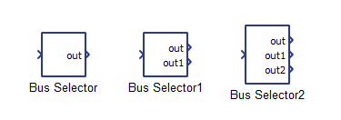
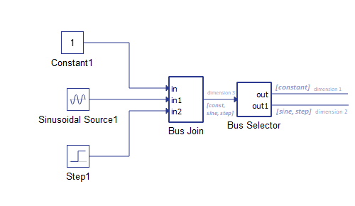
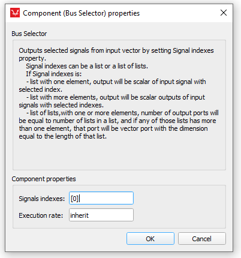

Bus Selector
Description of the Bus Selector component in Schematic Editor, which transposes signals from an input vector and outputs a scalar and/or a vector signal.
Component Icon

Description
This component is used to choose signals based on the signal indexes from an input vector, and then outputs them as a scalar signal and/or a vector signal.
The function of the component is illustrated by an example below. The input signal for the component is a vector concatenated of three signals: a constant signal (Bus Join in[0]), a sinusoidal signal (Bus Join in[1]), and a step signal (Bus Join in[2]). The output signals are a scalar signal and/or a vector signal, where the vector signal is concatenated of two signals.

For example, by setting Selected indexes property, as [[0],[1,2]], the output of this component will have two ports. The first port will be scalar signal which outputs the constant signal (in[0]). The second port outputs a vector signal out1 of dimension 2, with the sinusoidal signal (out1[0]) and the step signal (out1[1]) as values.
Ports
- Input
-
Input signal connected to the input terminal of the component.
- Supported types: uint, int, real.
- Vector support: yes
-
- Output (out)
-
Depending on the value of the Signal indexes property, a corresponding number of Out terminals is dynamically created. The ports of the component correspond to the selected indexes of the input vector, and outputs a scalar and/or a vector signal.
- Supported types: uint, int, real.
- The output type is inherited from the input signal.
- Vector support: yes
- Supported types: uint, int, real.
-
Properties

- Signals indexes
Type in the list of input signals indexes. Indexes must be in a list or a list of lists, consist of non-negative integers. The list can have one of the following forms:
- [x, y, z, ...] - a list of elements that as an output will have n scalar ports, where n is the length of [x, y, z, ...] -
- [[x,…],[y,…],…,[z,...]]- a list of lists, which has n ports as output,where n is the length of the entire list [[x,…],[y,…],…,[z,...]]. Each port will be either a scalar or a vector port with dimensions m, where m is length of each element in the [x,…],[y,…],…,[z,...] list. If m = 1, the port will be scalar, otherwise it will be a vector.
- Execution rate
- Type in the desired signal processing execution rate. This value must be compatible with other signal processing components of the same circuit: the value must be a multiple of the fastest execution rate in the circuit. There can be up to four different execution rates. To specify the execution rate, you can use either decimal (e.g. 0.001) or exponential values (e.g. 1e-3) in seconds. Alternatively, you can type in ‘inherit’ in which case the component will be assigned execution rate based on the execution rate of the components it is receiving input from.